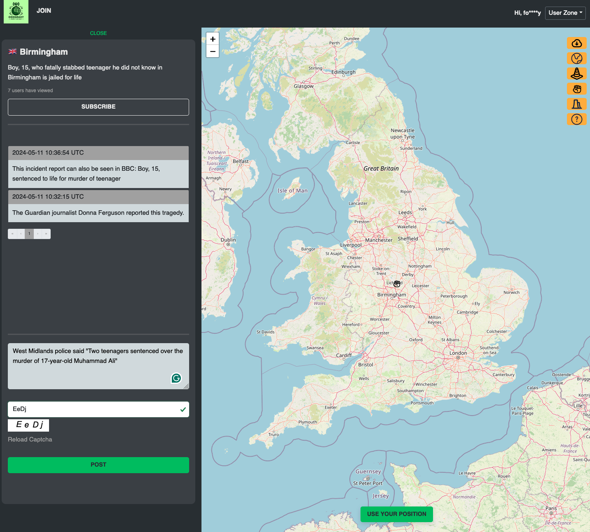

Oddgraphy
It is designed to keep users aware of risks wherever they are. Leveraging interactive map-based geolocation, users can explore live events by type, create new event markers, and provide real-time insights through comments. Subscription feature offers up-to-date notifications on events they follow.
Built with asynchronous processing, the platform updates user view counts in the background without disrupting the user experience. [ read key features ]


React
Redux
Styled Components
Leaflet
Supabase
Vite